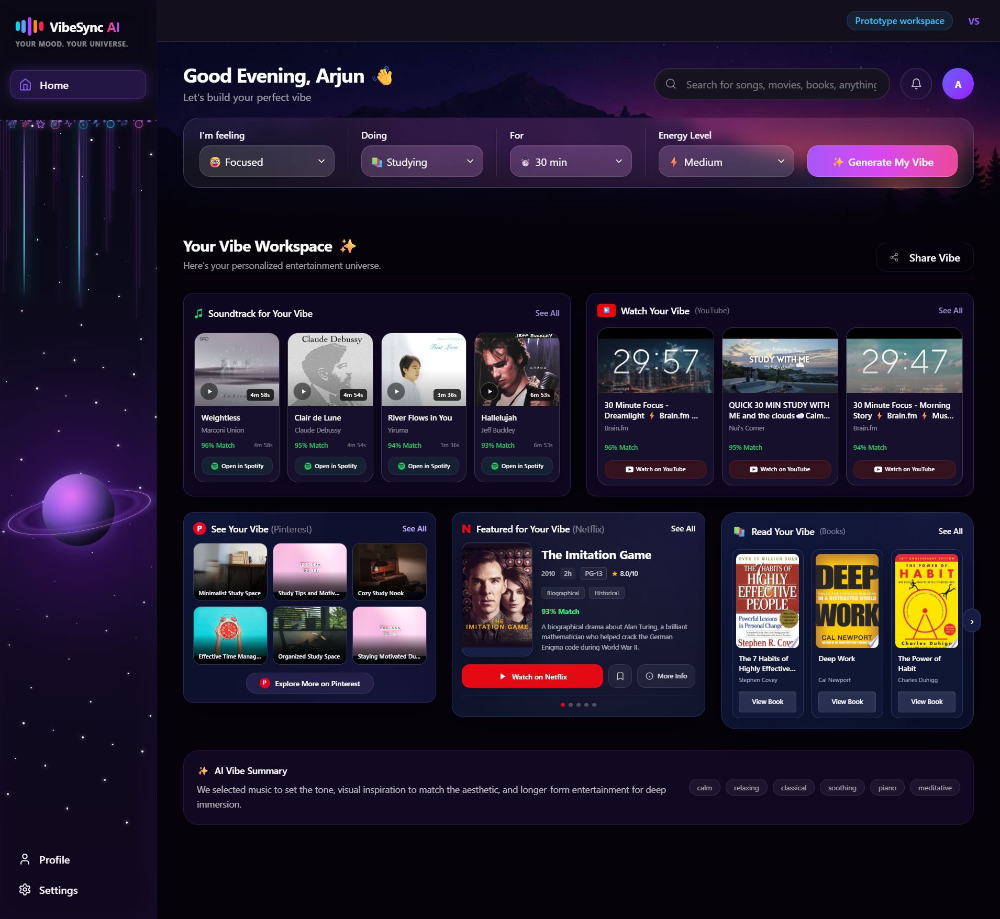
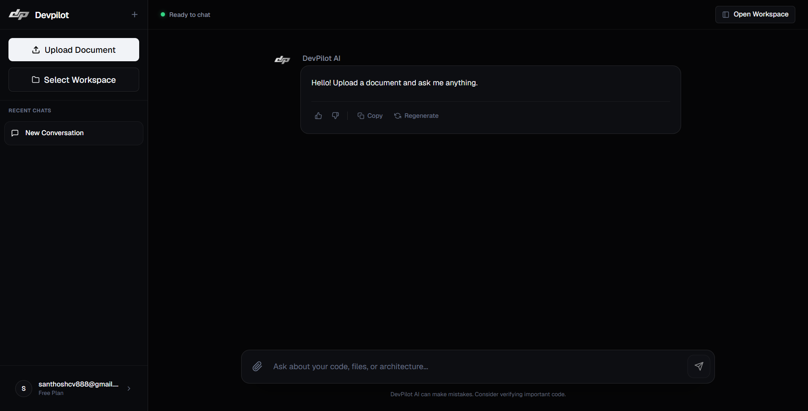
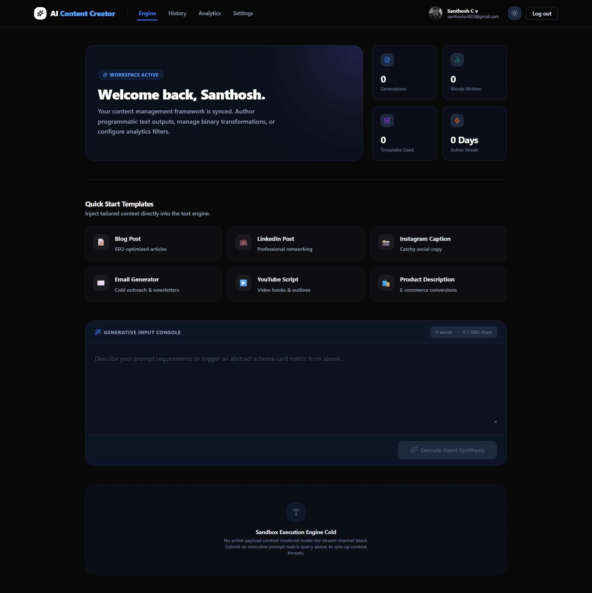
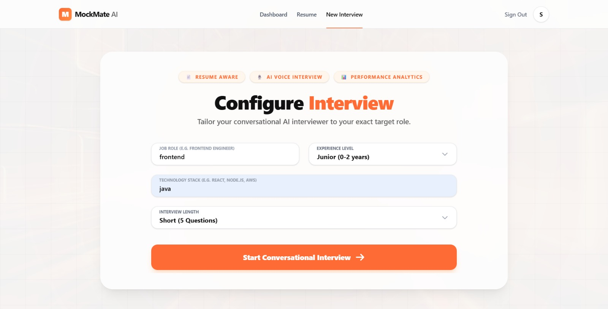
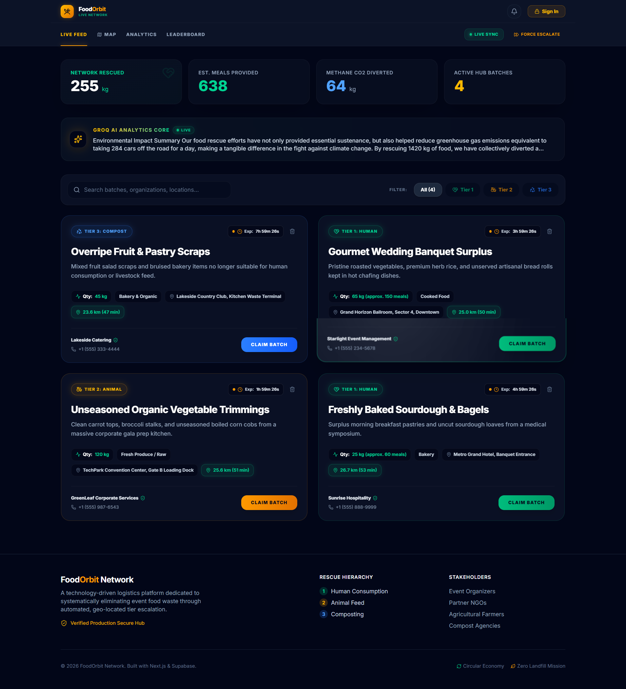
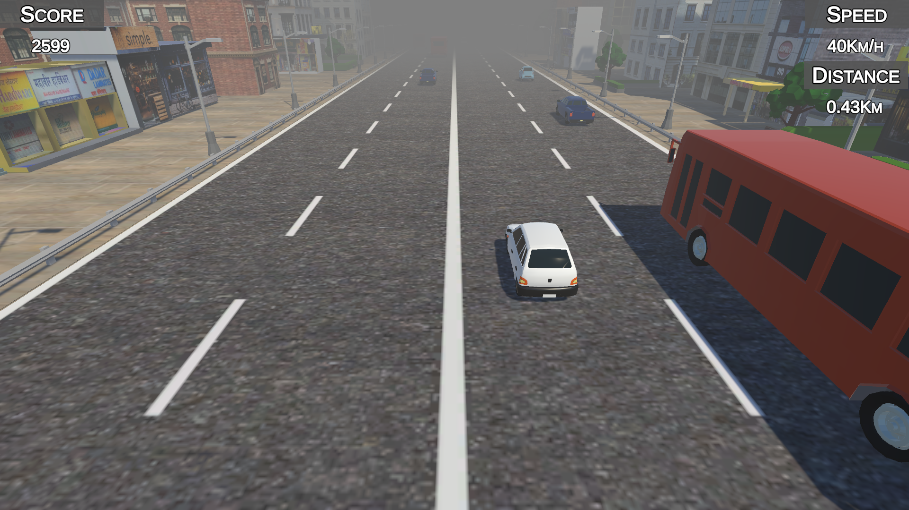
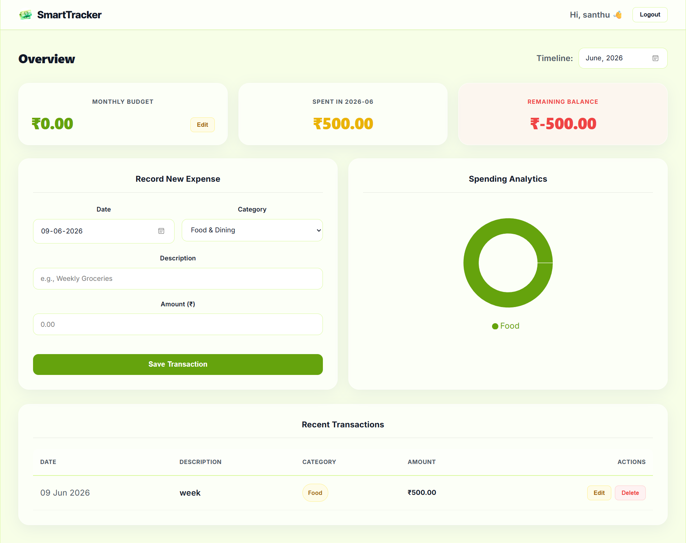
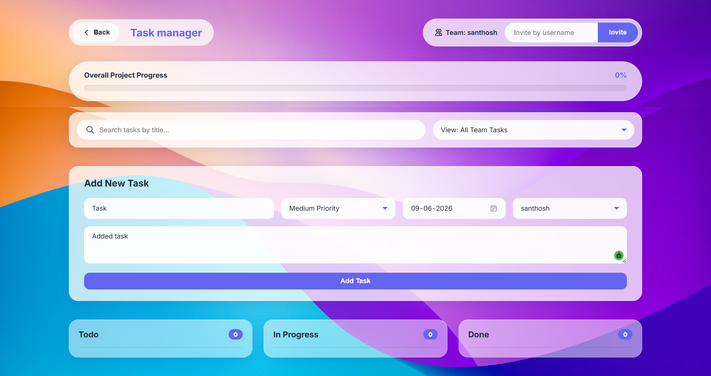

Latest Projects
BackVibeSync_AI

An AI-powered entertainment discovery platform designed to curate personalized experiences tailored exactly to your mood. VibeSync AI creates comprehensive "Vibe sessions" by analyzing a user's current mood, activity, available time, energy level, and preferences. I built this application to solve the paradox of choice in entertainment by delivering highly targeted music, YouTube videos, visual moodboards, movies, and book recommendations that perfectly fit the moment.
Key Features
- Personalized Vibe Generation that creates tailored entertainment sessions by analyzing real-time mood, activity, and energy levels.
- Multi-Format Recommendations offering a seamless curation of music, YouTube videos, movies, and visual moodboards in one unified experience.
- Time-Aware Suggestions ensuring that movie and video recommendations fit perfectly within the user's specific available time window.
- Smart Feedback System that learns from user preferences and interactions to continuously improve and refine future entertainment suggestions.
- Robust Modern Architecture built on a scalable FastAPI backend with a dynamic Next.js frontend, utilizing provider-independent LLM integrations.
Tech Stack Used
DevPilot_AI

An advanced, AI-powered developer assistant designed to bridge the gap between large codebases and natural language understanding. By integrating seamlessly with your local file system, DevPilot AI allows you to query your code, ask for architectural explanations, and even write files directly from the chat interface. I built this platform to supercharge developer workflows with an intelligent assistant that features a blazingly fast FastAPI backend and a stunning, highly animated Next.js frontend.
Key Features
- AI-Powered Chat conversing with advanced LLMs (powered by Groq) to understand complex code structures, debug issues, and generate new code.
- Deep Workspace Integration allowing you to directly select local folders and have DevPilot scan, read, and understand your entire file tree.
- In-App Code Editor featuring an integrated Monaco Editor to review and edit files seamlessly within the platform.
- Secure Authentication leveraging robust JWT-based user authentication and secure password hashing using bcrypt.
- Stunning UI/UX with a beautifully designed interface utilizing Tailwind CSS and smooth micro-animations via Framer Motion.
- High Performance Architecture pairing an asynchronous Python backend (FastAPI) with a responsive Next.js frontend for an optimal experience.
Tech Stack Used
AI Content Creator

A full-stack SaaS platform designed to help marketers, writers, and digital creators generate high-quality text instantly. I built this application to solve the problem of "writer's block" and time-consuming drafting by offering an intuitive, AI-driven workspace. It features a custom analytics dashboard to help users track their productivity, streaks, and template usage over time.
Key Features
- Advanced AI Content Generation leveraging the Google Gemini API for custom prompts and reusable templates.
- Secure User Authentication using Supabase and Google OAuth for seamless login and session management..
- Interactive Performance Analytics with visual data tracking for user generation volume, streaks, and workspace usage.
- Comprehensive Content History with view, search, and management functionality for all past AI generations.
- Modern Responsive UI featuring adaptive dark/light modes, glassmorphism design, and Framer Motion spring animations.
Tech Stack Used
MockMate AI

A full-stack AI-powered interview preparation platform designed to help students, job seekers, and professionals build confidence and improve their interview performance. MockMate AI simulates realistic technical and HR interviews using conversational AI, analyzes user responses, and provides detailed performance insights to accelerate career readiness. I built this application to solve the challenge of limited interview practice opportunities by creating an intelligent AI recruiter that conducts personalized mock interviews, evaluates communication and technical skills, identifies recurring weaknesses, and provides actionable improvement recommendations.
Key Features
- Resume-Aware AI Interviews that dynamically generate interview questions based on the user's uploaded resume and skill set.
- AI Follow-Up Interview Mode enabling natural conversational interviews where subsequent questions adapt to previous answers for a realistic recruiter experience.
- Voice-Based Interview Support with speech recognition for hands-free interview practice and real-time interaction.
- Comprehensive AI Evaluation System providing Overall Score, Technical Score, Communication Score, strengths, weaknesses, and personalized recommendations.
- Advanced Analytics Dashboard featuring performance trends, skill radar charts, recurring weakness analysis, interview history, and readiness tracking.
- Interview Report Management allowing users to review past interviews, detailed feedback reports, and performance progression over time.
- Secure Authentication & Data Storage powered by Supabase Authentication and PostgreSQL for reliable user management and persistence.
Tech Stack Used
FoodOrbit: Three-Tier Food Rescue Network

A full-stack logistics and sustainability platform designed to systematically eliminate event food waste by redirecting surplus food through three prioritized stages: human consumption, animal feed, and composting. FoodOrbit automates the redistribution process using time-sensitive tier escalation and interactive geolocation mapping. I built this application to solve the inefficiencies in traditional food rescue by creating an autonomous real-time network that connects event organizers directly with NGOs, agricultural farmers, and bio-waste agencies, ensuring zero edible food ends up in methane-producing landfills.
Key Features
- Autonomous Three-Tier Escalation that automatically shifts unclaimed food from Tier 1 (Human Consumption) to Tier 2 (Animal Feed) and Tier 3 (Composting) based on expiry timers and expanding notification radii.
- Interactive Geolocation Mapping built with Leaflet.js to visualize live surplus batches, display exact pickup coordinates, and render 5km, 10km, and 15km operational priority boundaries.
- Real-Time Cloud Synchronization powered by Firebase Firestore WebSockets (onSnapshot) to instantly update live hub availability and secure claim states across all connected browsers without page refreshes.
- Role-Based Access Control (RBAC) utilizing Firebase Authentication to enforce strict workflow rules, ensuring stakeholders can only view and claim surplus within their officially authorized tier.
- AI Sustainability Advisor integrated with Groq's Llama 3.3 LLM via secure Next.js backend routes to analyze live dashboard telemetry and generate real-time environmental impact reports.
- Personalized Impact Analytics dynamically calculating and displaying role-specific metrics such as landfill methane diverted, agricultural feed savings, and estimated tax receipt values.
Tech Stack Used
Highway Crash Game

Highway Crash is a 3D endless driving game developed in Unity where players navigate through highway traffic while avoiding collisions and achieving the highest possible score. I built the complete gameplay system including vehicle controls, traffic spawning, scoring, UI, camera system, and game-over mechanics using C#.
Key Features
- Realistic Car Controls: Smooth acceleration, braking, steering, and responsive vehicle physics.
- Dynamic Traffic System: AI vehicles spawn continuously with randomized lanes and timing to create challenging gameplay.
- Score & Distance Tracking: Live speed, distance traveled, and score are displayed throughout the game.
- Collision Detection: The game ends instantly when the player crashes into another vehicle.
- Smooth Follow Camera: Third-person camera follows the player's car with smooth movement.
- Multiple Playable Vehicles: Different vehicle models can be selected before starting the game.
Tech Stack Used
smart-budget-tracker

The Smart Budget Tracker is a modern, responsive, full-stack personal finance application designed to help individuals monitor their expenses, manage monthly allowances, and analyze spending habits securely. Featuring a clean visual interface with glassmorphic elements, the application enforces individual user security via token-based sessions and provides automated local data visualization to track remaining balances dynamically.
Key Features
- Secure User Authentication using JWT-based login and registration.
- Complete Expense Management with add, edit, delete, and transaction tracking functionality.
- Dynamic Budget Allocation with visual spending indicators and alert thresholds.
- Automated Database Synchronization and table generation on application startup.
- Timeframe Filtering and Interactive Analytics for monthly expense insights.
- Modern Responsive UI with custom styling, calendar inputs, and adaptive layouts.
Tech Stack Used
ProjectManager

Project Flow is a secure, full-stack project management application designed to streamline workflows and track daily tasks efficiently. Built with a modern React frontend and a robust Node.js backend, the platform allows users to create accounts, manage their project data, and securely interact with a cloud-based database. It emphasizes a clean, responsive user experience and reliable RESTful API architecture.
Key Features
- Secure user registration and login system protected using JWT authentication and encrypted credentials.
- Seamless CRUD (Create, Read, Update, Delete) operations connected dynamically to MongoDB Atlas cloud database.
- Modern and fully responsive dashboard interface built with React and Vite for smooth performance across desktop, tablet, and mobile devices.
- Custom RESTful API architecture powered by Express.js ensuring secure and efficient communication between frontend and backend services
- * Secure handling of database connection strings, API keys, and sensitive credentials through environment variables.
Tech Stack Used
PromptFix AI

PromptFix AI is an intelligent tool designed to optimize and refine prompts for Large Language Models. It analyzes user inputs and suggests improvements to generate more accurate, relevant, and high-quality responses. Built with a modern frontend and a robust backend, it seamlessly handles complex AI API integrations while providing an intuitive user experience.
Key Features
- Intelligent prompt analysis and optimization suggestions for better AI outputs.
- Real-time integration with popular LLM APIs for instant prompt testing.
- User-friendly interface for side-by-side prompt comparison and refinement.
- Secure saving, organizing, and management of user prompt templates.
- Fully responsive design for seamless performance across desktop, tablet, and mobile devices.